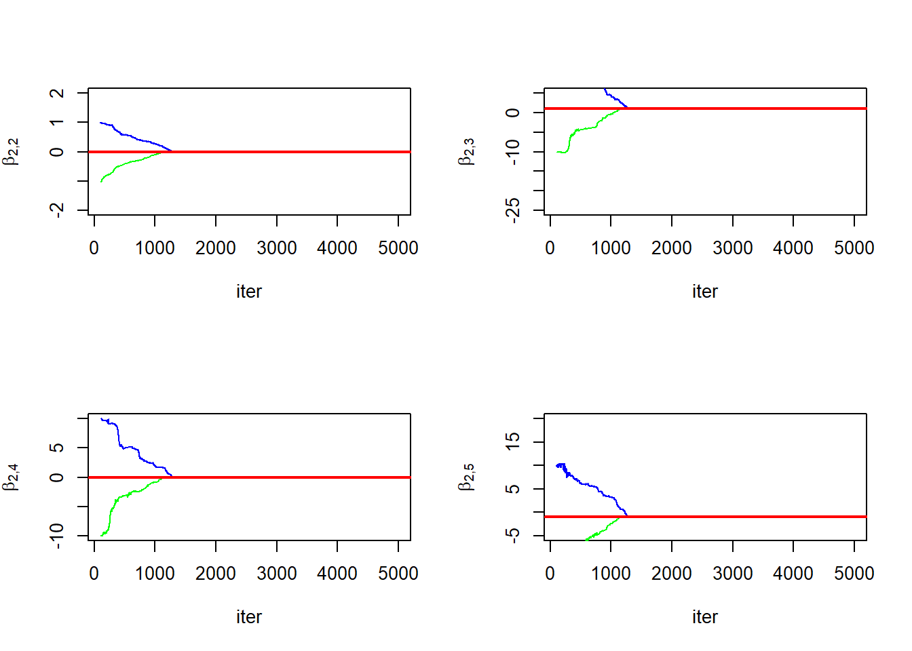
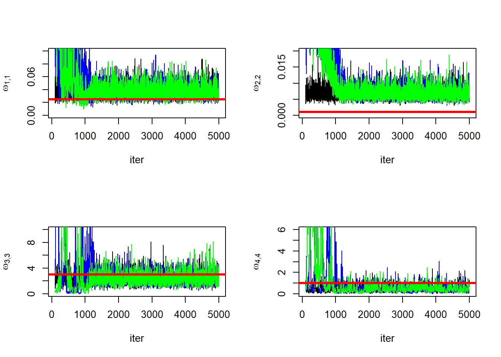
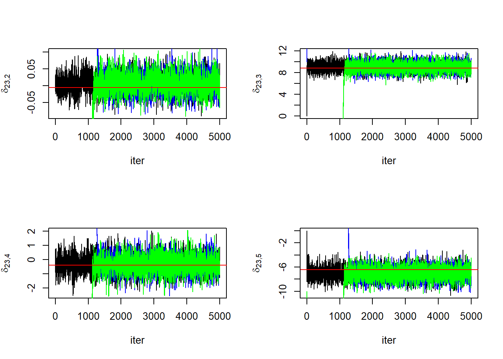
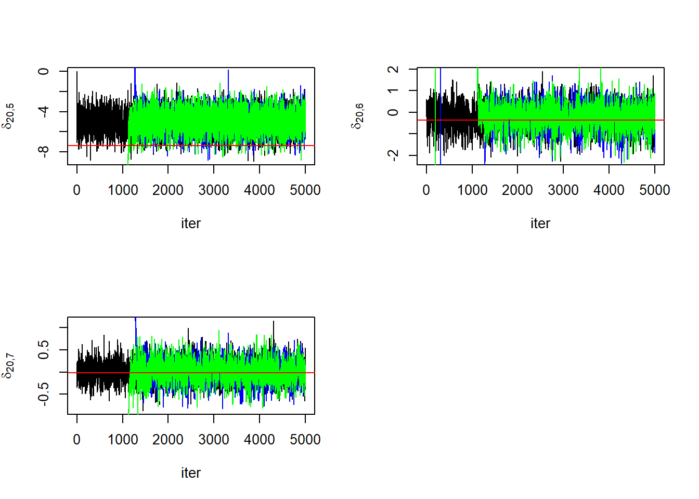

Code: Load the packages
library(tictoc)
library(Rfast)
library(numDeriv)library(tictoc)
library(Rfast)
library(numDeriv)The goal here will be to verify convergence of the MCMC developed in the previous steps. First, we’ll define the functions necessary to fit the model.
# expit #
# equivalent to plogis with m=0 & s=1.
expit <- function(x){1/(1+exp(-x))}
# expit_p #
# first derivative of the expit function. equivalent to dlogis with m=0 & s=1.
expit_p <- function(x){expit(x)*(1-expit(x))}
double_logis <- function(t, theta){
# double logistic function.
# theta1 is transformed using the logistic function.
# theta2 is transformed using the
# This allows for all parameters to follow a gaussian distribution
theta[1] <- plogis(theta[1])
theta[7] <- exp(theta[7])
n1 <- 1
d1 <- 1 + exp((theta[3] - t)/theta[4])
n2 <- 1
d2 <- 1 + exp((theta[5] - t)/theta[6])
out <- theta[1] + (theta[2] - theta[7]*t)*(n1/d1 - n2/d2)
return(out)
}
# double logistic gradient wrt theta
basis_functions <- function(t,theta){
t <- t%%366
dl0 <- double_logis(t,theta)-expit(theta[1])
a <- expit_p(theta[7])
theta[7] <- exp(theta[7])
B1 <- expit_p(theta[1])
B2 <- (1/(1+exp((theta[3]-t)/theta[4])))-(1/(1+exp((theta[5]-t)/theta[6])))
B3 <- (theta[7]*t - theta[2])/(2*theta[4]*cosh((theta[3]-t)/theta[4])+2*theta[4])
B4 <- ((theta[3] - t)*(theta[2]-theta[7]*t)*cosh((theta[3]-t)/(2*theta[4]))^(-2))/(4*theta[4]^2)
B5 <- (theta[2] - theta[7]*t)/(2*theta[6]*cosh((theta[5]-t)/theta[6])+2*theta[6])
B6 <- ((theta[5] - t)*(theta[7]*t-theta[2])*cosh((theta[5]-t)/(2*theta[6]))^(-2))/(4*theta[6]^2)
B7 <- -t*a*((1/(1+exp((theta[3]-t)/theta[4])))-(1/(1+exp((theta[5]-t)/theta[6]))))
B <- unname(cbind(B1, B2, B3, B4, B5, B6, B7))
return(B)
}
fit_lm <- function(Y, X, Z,
delta, sigma2,
beta, Omega,
mu, Lambda,
a, b,
niter = 5000){
require(Rfast)
# indexes
p <- dim(delta)[1]
q <- dim(Z)[2]
N <- dim(delta)[2]
n <- sapply(Y, length)
# unstack beta
B <- matrix(c(beta), nrow=p)
Lambda_inv <- diag(1/diag(Lambda))
# storage
keep_delta <- array(NA, dim = c(p, N, niter))
keep_B <- array(NA, dim = c(p, q, niter))
keep_Omega <- matrix(NA, nrow = niter, ncol = p)
keep_sigma2 <- rep(NA, niter)
# set initial values
keep_delta[,,1] <- delta
keep_B[,,1] <- B
keep_Omega[1,] <- diag(Omega)
keep_sigma2[1] <- sigma2
# pre-computes
XtX <- list()
XtY <- list()
for (k in 1:N){
XtX[[k]] <- t(X[[k]])%*%X[[k]]
XtY[[k]] <- t(X[[k]])%*%Y[[k]]
}
ZtZ <- t(Z)%*%Z
Lmu <- Lambda_inv%*%mu
Ao <- N/2 + a
As <- sum(n)/2 + a
# Gibbs Loop
tik <- proc.time()
for (iter in 2:niter){
Omega_inv <- diag(1/diag(Omega))
# sample deltas
for (i in 1:N){
M <- (1/sigma2)*XtY[[i]] + Omega_inv%*%(B%*%Z[i,])
V_inv <- chol2inv(chol((1/sigma2)*XtX[[i]] + Omega_inv))
delta[,i] <- V_inv%*%M+t(chol(V_inv))%*%rnorm(p)
}
# sample beta
M <- kronecker(t(Z), Omega_inv)%*%matrix(c(delta), ncol = 1) + Lmu
V_inv <- solve(kronecker(ZtZ, Omega_inv) + Lambda_inv)
beta <- V_inv%*%M+t(chol(V_inv))%*%rnorm(q*p)
B <- matrix(beta, nrow = p)
# sample omegas
for (k in 1:p){
Bo <- sum((delta[k,] - (B%*%t(Z))[k,])^2)/2 + b
Omega[k,k] <- 1/rgamma(1, Ao, Bo)
}
# sample sigma2
SSE <- 0
for (i in 1:N){
SSE <- SSE + sum((Y[[i]] - X[[i]]%*%delta[,i])^2)
}
Bs <- SSE/2 + b
sigma2 <- 1/rgamma(1, As, Bs)
# store everything
keep_delta[,,iter] <- delta
keep_B[,,iter] <- B
keep_Omega[iter,] <- diag(Omega)
keep_sigma2[iter] <- sigma2
}
tok <- proc.time() - tik
return(list(keep_delta = keep_delta,
keep_B = keep_B,
keep_Omega = keep_Omega,
keep_sigma2 = keep_sigma2,
comp_time = tok))
}We’ll start by simulating some data similar to that in Step 4, then initialize the Gibbs sampler at different values to confirm the chains converge to the same stationary distribution.
# dimensions
N <- 40
m <- 366
n <- rep(100,N)
p <- 7
q <- 2
theta0 <- c(-1.80, 0.75, 120, 8, 270, 8, -7.5)
# Design matrices
gradinput <- function(x,t){
return(double_logis(t,x))
}
# compute numerical gradient
Xp <- basis_functions(1:366, theta0)
Z <- matrix(c(rep(1,N), seq(1:N)), ncol = 2)
# beta parameters
B0 <- matrix(c(0, 0, -15, 0, 15, 0, 0,
0, 0, 1, 0, -1, 0, 0), nrow=p)
beta0 <- matrix(c(B0), ncol = 1)
Omega0 <- diag(c(0.025, 1e-3, 3, 1, 3, 1, 0.0005))
# delta parameters
delta0 <- matrix(0, nrow = p, ncol = N)
sigma20 <- 0.0025
# sample data
Y <- list()
X <- list()
t <- list()
for (i in 1:N){
# draw delta
delta0[,i] <- t(Rfast::rmvnorm(1, B0%*%Z[i,], Omega0))
# draw rows from parent X
t[[i]] <- sample(1:m, n[i])
X[[i]] <- Xp[t[[i]],]
# draw response
Y[[i]] <- matrix(rnorm(n[i], mean = X[[i]]%*%delta0[,i], sd = sqrt(sigma20)), ncol=1)
}Fit model with first set of initial values.
niter <- 5000
delta <- matrix(0, nrow = p, ncol = N)
beta <- rep(0, q*p)
sigma2 <- 0.01
Omega <- diag(c(0.5, 0.5, 5, 0.5, 5, 0.5, 0.001))
mu <- rep(0, q*p)
Lambda <- diag(rep(1e06,q*p))
a <- 0.1
b <- 0.1
fit1 <- fit_lm(Y, X, Z,
delta, sigma2,
beta, Omega,
mu, Lambda,
a, b,
niter = niter)Fit model with second set of initial values.
delta <- matrix(10, nrow = p, ncol = N)
beta <- rep(10, q*p)
sigma2 <- 2
Omega <- 2*diag(p)
mu <- rep(0, q*p)
Lambda <- diag(rep(1e06,q*p))
a <- 0.1
b <- 0.1
fit2 <- fit_lm(Y, X, Z,
delta, sigma2,
beta, Omega,
mu, Lambda,
a, b,
niter = niter)Fit model with third set of initial values.
delta <- matrix(-10, nrow = p, ncol = N)
beta <- rep(-10, q*p)
sigma2 <- 3
Omega <- diag(p)
mu <- rep(0, q*p)
Lambda <- diag(rep(1e06,q*p))
a <- 0.1
b <- 0.1
fit3 <- fit_lm(Y, X, Z,
delta, sigma2,
beta, Omega,
mu, Lambda,
a, b,
niter = niter)Next we’ll construct the trace plots of the parameters from each of the three models. Convergence to the same stationary distribution will be apparent if the chains merge together.
First for \(\boldsymbol\beta\).
win <- 100:niter
ymin <- c(-2, -2, -25, -10, -5, -10, -5)
ymax <- c( 2, 2, 5, 10, 20, 10, 5)
par(mfrow = c(2,2))
for(l in 1:q){
for (k in 1:p){
# ymin <- min(fit1$keep_B[k, l, win], fit2$keep_B[k, l, win], fit3$keep_B[k, l, win])
# ymax <- max(fit1$keep_B[k, l, win], fit2$keep_B[k, l, win], fit3$keep_B[k, l, win])
plot(win, fit1$keep_B[k, l, win], type = "l",
ylab = bquote(beta[paste(.(l),",",.(k))]),
xlab = "iter",
ylim = c(ymin[k], ymax[k]))
lines(win, fit2$keep_B[k, l, win], col ="blue")
lines(win, fit3$keep_B[k, l, win], col ="green")
abline(h = B0[k, l], col = "red", lwd = 2)
}
}



Trace plots for \(\boldsymbol\Omega\).
par(mfrow = c(2,2))
ymin <- 0
ymax <- c(0.1, 0.02, 10, 6, 8, 6, 0.3)
for (k in 1:p){
plot(win, fit1$keep_Omega[win, k], type = "l",
ylab = bquote(omega[paste(.(k),",",.(k))]),
xlab = "iter",
ylim = c(ymin, ymax[k]))
lines(win, fit2$keep_Omega[win, k], col ="blue")
lines(win, fit3$keep_Omega[win, k], col ="green")
abline(h = Omega0[k, k], col = "red",lwd = 3)
}

Trace plots for \(\sigma^2\)
plot(win, fit1$keep_sigma2[win], type = "l",
ylab = bquote(sigma^2),
xlab = "iter")
lines(win, fit2$keep_sigma2[win], col ="blue")
lines(win, fit3$keep_sigma2[win], col ="green")
abline(h = sigma20, col = "red", lwd = 3)
Trace plots for 5 subject \(\boldsymbol\delta_i\) chosden at random.
win <- 1:niter
par(mfrow = c(2,2))
param_sample <- sample(1:N, 5)
for (year in param_sample){
for (k in 1:p){
subscr <- paste0(year,",",k)
plot(win, fit1$keep_delta[k, year, win], type = "l",
ylab = bquote(delta[.(subscr)]),
xlab = "iter")
lines(win, fit2$keep_delta[k, year, win], col ="blue")
lines(win, fit3$keep_delta[k, year, win], col ="green")
abline(h = delta0[k, year], col = "red")
}
}




